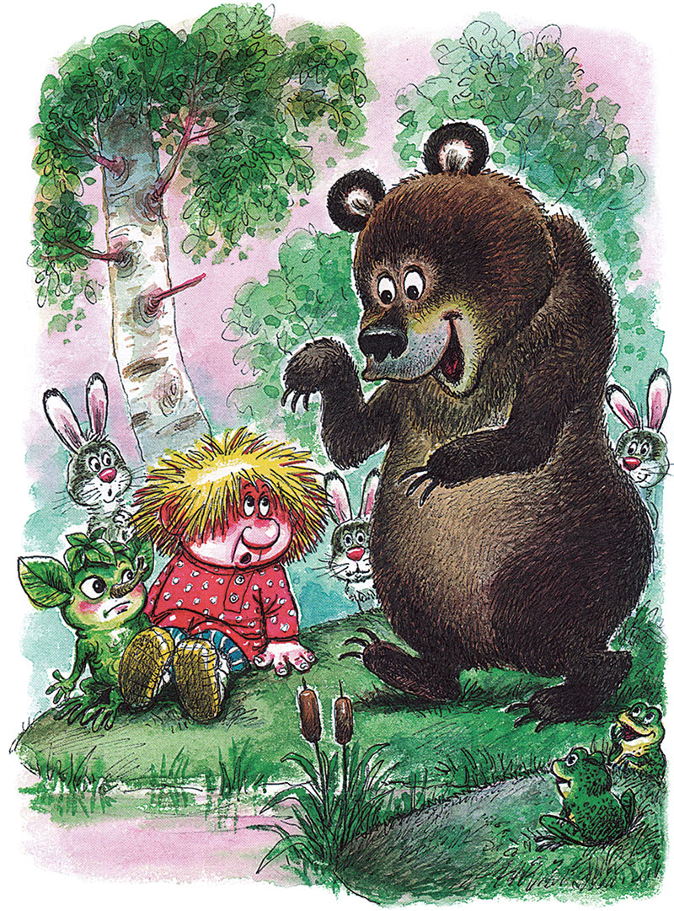
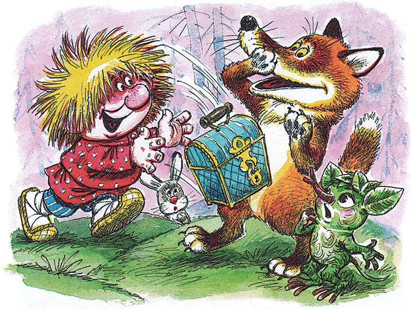
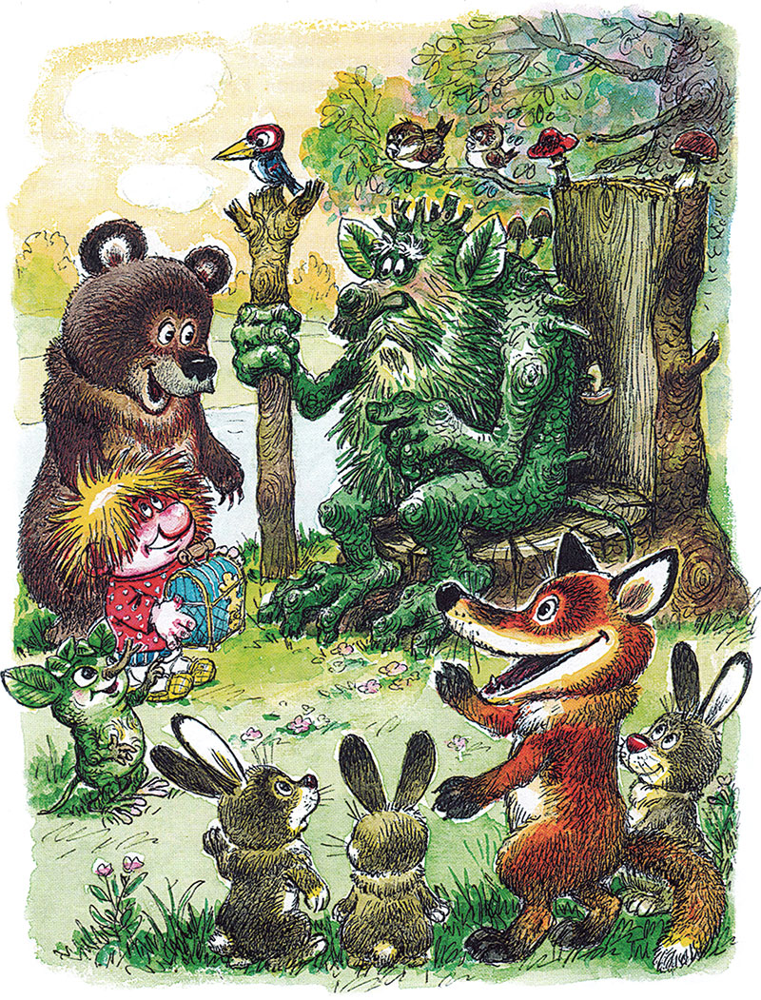
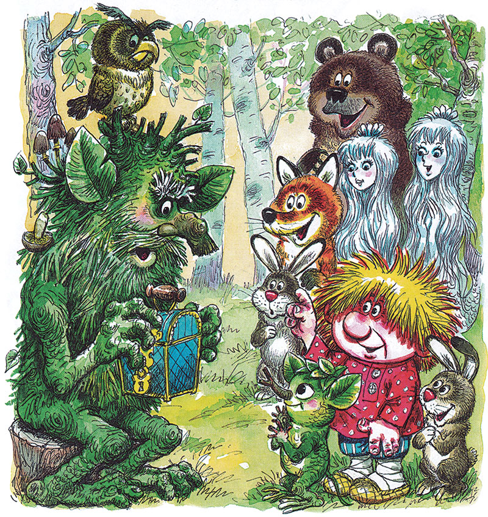

Домовёнок Кузя - продолжение -13.
Татьяна Александрова29. Медведь и лиса
Маленький домовенок и маленький лешонок опять сидели одни под березой у края болота.
— Красное солнышко на белом свете черную землю греет, — печально сказал Лешик, глядя, как поднимается солнце, а ночь прячется в болото.
Вдруг затрещало, зашумело. Кто-то тяжелый бежал по лесу. «Баба Яга, что ли?» — испугался Кузька. И тут из кустов выглянул заяц, за ним другой, третий, а за восьмым зайцем, тяжело дыша и махая лапами, выскочил Медведь:
— А я-то кустами трещу, вас ищу! С лап сбился! Ура!

Лягушки врассыпную. Заяц в кусты (это он помог Медведю отыскать друзей), а все до единой кикиморы выскочили и заверещали:
— Уря-ря-ря! Ря-ря! У-у-у!
Орут так, что Медведя не слышно: пасть открывает, а звука нет. Медведь даже попятился от болота. Кикиморы поорали и умолкли.
— Они что? С ума спятили? — шепотом спросил Медведь.
— Им, наверное, не с чего спячивать, — ответил Кузька и рассказал про сундучок.
Медведь рассердился, заревел изо всех медвежьих сил:
— Отдавайте сундук, воровки! Кикиморы запрыгали, захихикали! Еще бы! Сам Медведь с ними беседует. И запели:
Как пошел наш Медведь по грибы, по грибы, И застрял наш Медведь, ни туды ни сюды, Во болотушке, во трясинушке!
За Медведем кикиморы отправили по грибы Зайца, утопили в трясине лягушек, за ними — Кузьку с Лешиком. А там и береза пошла по грибы, и тучка в трясине ни туды ни сюды. Все, что попадалось на глаза кикиморам, тут же попадало в их дурацкую песню.
И вдруг они запели:
Как пошла наша Лисичка по грибы, по грибы…
— Это что ж здесь происходит, а? — спросил вкрадчивый голос. — И кого ж здесь обижают, а? И кто же это при всем честном народе безобразничает, а?
Из куста вышла Лиса, повернулась налево, повернулась направо и как крикнет:
— Кикимарашки-замарашки! Кикимордочки чумазые!
— Сама мордочка! От замарашки и слышим!
— А я в вас шишкой кину! — Лиса наподдала шишку задними лапами, и шишка полетела в болото.
— И мы в тебя шишкой! И мы в тебя шишкой! — орут кикиморы.
И вот уже грязная шишка летит из болота прямо в Медведя.
— А я в вас камешком! — И Лиса бросает в болото камешек с тропинки.
— И мы, и мы камешком! — Кикиморы нырнули в болото за камнем.
Лиса попросила друзей принести еще камней, да побольше. Знай покидывает камнями в болото. Только и слышно, как они свистят и шлепаются. Друзья не успевают подносить. А Медведь приволок такую глыбу, что самому пришлось бросать ее в болото, трясина ухнула, пошла кругами. Тонут камни в болоте. А кикиморы достать их не могут, кидаться нечем. Пробовали грязью, но Лиса их задразнила:
— Вы в нас мяконьким, а мы в вас тверденьким! — и угодила камнем прямо в большую кикимору, у которой не поймешь, сколько рук.
Шлепнулась кикимора вверх ногой, заверещала жутким голосом, вспомнила о чем-то, перевернулась, запрыгала к сухой коряге на середину болота, схватила волшебный сундук и как запустит в Лису. Летит сундук над болотом. Смотрит на него множество глаз. Долетит ли? Кикиморы обрадовались:
— И мы в вас тверденьким! И мы в вас тверденьким!
Сундучок упал прямо на Лису. Кузька вцепился в него обеими руками, поверить своему счастью не может.

Орут кикиморы, верещат, радуются: в цель попали и столько народу на них смотрит!
— Кикиморы они кикиморы и есть, — сказал Лешик. — Весь век озорничают да балуются. Может. иначе в болоте и не проживешь?
Когда все ушли, кикиморы тут же все забыли, грызут болотные орешки и беседуют:
— Комары и мухи нынче не такие сытные, как в старину. Отощают совсем, что делать будем? Поохали, повздыхали, опять переполох:
— А вдруг все болота сразу возьмут и высохнут? Куда кикиморам деваться?
Не успели опомниться от такого ужаса, как новое беспокойство:
— А что, если вся земля болотом станет? Где набрать столько кикимор для заселения?
30. Весенний праздник
— Со сна и еле-еле поднялся он с постели, — потягиваясь и зевая, сказал старый леший свою любимую поговорку, ею он встретил девять тысяч девяносто девятую весну. — Какая там погода, внучек? В солнышко или в дождь проснулись?
А внука-то и нет. Вылез дед из берлоги, поклонился солнышку. На поляну выскочили зайчиха и семь зайчат:
— Доброй весны, дедушка!
— Доброго лета, зайчишки! До чего ж вы хороши! Да как вас много! — смеялся дед Диадох.
Все новые зайцы выскакивали на поляну. Дед принялся их считать. Вдруг из-за деревьев стрелой вылетела Сорока с ужасной вестью-новостью: кикиморы утопили в Черном болоте Лешика, Кузьку, сундучок, Лису с Медведем. Про то, что злодейки утопили в трясине еще и березу на краю болота и даже тучку с неба, дед Диадох не услышал. Он сломя голову побежал к Черному болоту.
По дороге к старому лешему подлетел Дятел, утешил его, поругал Сороку-балаболку и вывел прямо на опушку, где отдыхали Кузька, Лешик, Медведь и Лиса. То-то было радости!

Тут только все поняли, что в лесу сегодня Весенний праздник. Он всегда наступает, когда просыпается Леший. Цвели красные, голубые, желтые цветы. Серебряные березы надели золотые сережки. Птицы пели свои лучшие песни. В голубом небе резвились нарядные облака.
Лешик и домовенок, перебивая друг друга, рассказывали и рассказывали. Дед Диадох успевал лишь удивляться: надо же, такое и в зимней спячке не приснится!
Под вечер все направились к реке. Чтобы этот день и для Кузьки был праздником, пусть русалки проводят домовенка домой. Ведь речные хозяйки знают все дома над всеми речками, большими и малыми. А лучший дом они уж как-нибудь отличат от других.
Увидев домовенка, лешонка и даже старого лешего, которого до сих пор не видели, русалки выскочили из реки, повели вокруг гостей хоровод:
Бережочек-бережок
Нашу речку бережет!
Вот так вот, вот так вот,
Нашу речку бережет!
Лешику так понравился хоровод, что, когда кончилась песня, он один принялся бегать вокруг какого-то пня на берегу и петь песенку, которую сам только что придумал:
Стоит в лесу пень-пень!
А я бегаю весь день,
Пою песенку про пень:
«Стоит в лесу пень-пень»…
Все взялись за руки, и пение вокруг пня продолжалось много времени. А на пне сидел дед Диадох, поглядывая то на сундучок, который он держал в руках, пока Кузька пляшет, то на плясунов. Цветы и звезды на сундучке сверкали все ярче.
Серебряная луна плыла в небе, а другая серебряная луна — в реке. Весело плескались серебряные волны. И тогда старый леший, хоть и не любил он лезть в чужие дела, спросил у домовенка, что же хранится в волшебном сундуке, какая в нем тайна.
Кузька важно оглядел компанию, усевшуюся вокруг пня, и торжественно провозгласил:
— Дайте клятву. Тогда скажу. Клятвы ни у кого не оказалось. Никто даже и не знал, что это такое.
— Повторяйте за мной! — строго сказал домовенок. — «Из-за моря, из-за океана летят три ворона, три братенника, несут три золотых ключа, три золотых замка. Запрут, замкнут они наш сундук навеки, ежели отдадим его нечувственникам и ненавистникам. Ключ в небе, замок в море». Клятва вся.
Всем клятва очень понравилась. Пришлось повторить ее несколько раз. Потом русалки принялись расспрашивать про море-океан, а Лешик про воронов-братенников, но Кузька не мог сообщить никаких особенных подробностей ни про то, ни про другое.
— Так мы, внучек, и не отдали твой сундучок, — сказал дед Диадох. — Баба Яга — ненавистница, кикиморы болотные — нечувственницы. Побывал сундучок в их руках, да недолго. Не за что на нас обижаться воронам-братенникам!
— Тогда пойте за мной! — повеселел Кузька.
Сундучок, сундучок,
Позолоченный бочок,
Расписная крышка,
Медная задвижка!
Раз-два-три-четыре-пять!
Можно сказку начинать!
Заиграла тихая музыка. Со звоном откинулась крышка сундука. Все замерли, Кузька схватил прошлогодний сухой лист, что-то на нем нацарапал, опустил в сундучок. Крышка захлопнулась, а сундучок произнес приятным голосом:
— Чирки-почирки, черточки и дырки, вот и весь сказ как раз про вас.

Стало тихо. Лешие и русалки, вытаращив глаза, глядели на сундучок. Надо же! Простая деревяшечка, а так разговаривает! А Медведь с Лисой до того испугались сказки про чирки-почирки, что убежали в кусты.
Кузька объяснил, что сундучок хранится у домовых очень давно. А волшебный он потому, что ежели положить в него рисунок, любую картинку, то сундучок сам сочинит и расскажет сказку про то, что на картинке нарисовано. Нарисуешь мышь — расскажет про мышь. Нарисуешь русалку и водяную лилию — сундучок расскажет такую сказку, где с цветком и речною хозяйкой непременно произойдет что-то страшное или смешное. Но вот беда! Рисовать домовые не умеют. Потихоньку утаскивают рисунки у людей, уносят под печку или в закуток, опускают в сундучок и слушают сказки.
Тогда Лешик с дедом и русалки сразу принялись рисовать кто на листиках, кто на кустах коры. Но ничего у них не вышло. И когда рисунки клали в сундучок, он рассказывал все про те же черточки и дырки.
Значит, решил Кузька, никто не умеет рисовать, кроме людей и Деда Мороза. Тот рисует прямо на окнах. Но еще никто и никогда не вынимал из окон стекол и не опускал их в сундук, чтобы услышать сказку про какой-нибудь цветок, нарисованный Дедом Морозом.
Услышав про Деда Мороза, дед Диадох принес из лесу и опустил в сундучок самый красивый весенний цветок. Долго играла приятная музыка, но никакой сказки сундучок так и не рассказал. Другое дело, если бы цветок был нарисованный. Тут только домовенок понял, как он соскучился по людям.
— Рассвет! Уже светает! — встревожились русалки. — Прощайся, Кузя! Пора в путь. Ты беги по бережку, мы по реке поплывем.
Вдруг над рекой послышалась разбойничья песня: «Ух да и эх да!» В корыте, гребя пестом, к друзьям подплывала Баба Яга:
— Чадушко! Бабуля за тобой приехала! Пропадешь ты тут, не пивши, не евши! Куда ты! Куда, говорю? Вот догоню и съем! У-у-у!
Тут корыто перевернулось. Яга упала в воду.
А из реки вынырнул Водяной:
— Покоя от вас нет! Кто тут орет? Кто тут воет? Это ты, Яга? Да я тебя! Да ты у меня! Вон из воды! Чтоб духу твоего тут не было!
Продолжение следует